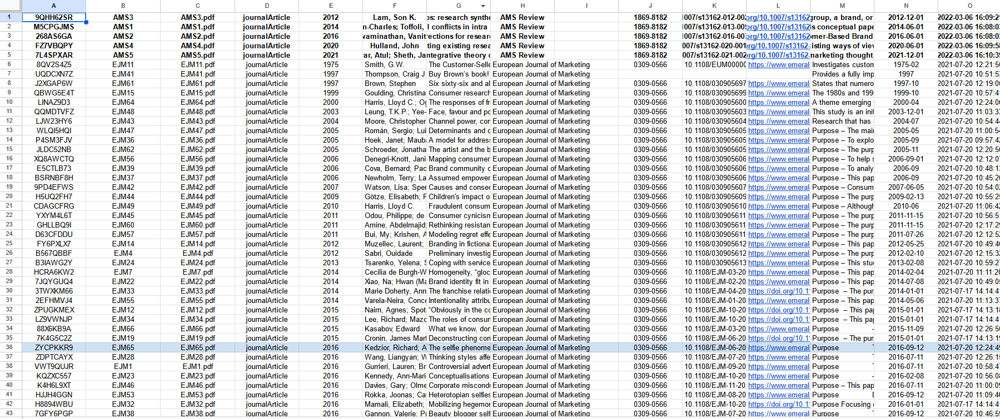
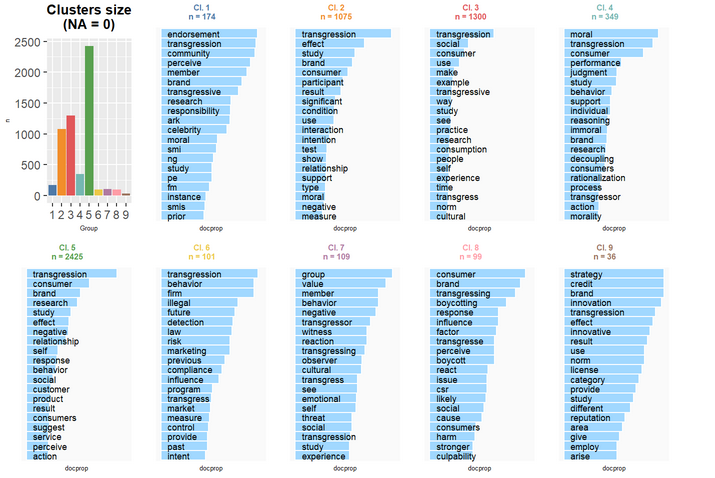

Etudier le concept de transgression dans la littérature en marketing
NLP workshop
IAE Amiens - UPJV
sophie.balech@u-picardie.fr
26/10/2023
Contexte de la recherche
Thèse sur la transgression en marketing appliquée aux normes de genre sur le cas du maquillage pour hommes d’Alicia Lefrançois
Revue de littérature semi-systématique
Collecte des données “à la main” durant l’été 2021 (phase 1) et l’année 2022 (phase 2)
Objectif : Conceptualiser et définir la transgression en marketing
Utilisation de la méthode de classification descendante hiérarchique (CHD) de Reinert (comme dans Iramuteq) grâce que package rainette
Présentation des données
782 articles issus de 30 revues
1 528 auteurs, en moyenne 2.48 auteurs par articles
Le corpus s’étend de 1961 à 2022
Longueur moyenne d’un article : 14 907 (min : 1 624 ; max : 37 978)
Construction de la base
Les données brutes

Construction de la base
Préparation des métadonnées
library(tidyverse)
library(readxl)
#on lit le fichier excel
data<-read_xlsx("782 ARTICLES TRANSGRESSION.xlsx")
#on renomme les variables et on sélectionne les pertinentes
df<-data%>%
rename(doc_id=3,
journal=`Publication Title`,
year=`Publication Year`,
abstract=`Abstract Note`,
title=Title,
author=Author)%>%
select(doc_id, year, title, abstract, journal, author)Construction de la base
Lecture des articles
library(tm) library(quanteda)
#on récupère les noms des fichiers à lire depuis les dossiers
files <- list.files( pattern = "pdf$", recursive = T, include.dirs = T)
#on lit les fichiers, sans la mise en forme
corp<-Corpus(URISource(files),
readerControl = list(reader = readPDF, text=("-layout")))
#on enlève les sauts de page et autres mises en forme à partir d'espace
corp <- tm_map(corp, stripWhitespace)
#on change de format, on passe en corpus quanteda
corpus<-corpus(corp)
#on s'assure d'avoir que les textes présents dans les métadonnées
corpus<-corpus_subset(corpus,id%in%df$doc_id)
#on enlève les auteurs des métadonnées du corpus puis on met les métadonnées du fichier préparé en amont et on renomme le tout
metadoc<-docvars(corpus)%>%select(-author)
metadoc<-left_join(metadoc,df,c("id"="doc_id"))
docvars(corpus)<-docvars(corpus)%>%mutate(journal=metadoc$journal, year=metadoc$year, author=metadoc$author)
#on transforme tout ça en tableau de données et on ne garde que les métadonnées pertinentes
df2<-convert(corpus, to="data.frame")
df2<-df2%>%select(doc_id, text, author, id, journal, year)Préparation des données
Annotation POS
#on initialise l'annotateur
cnlp_init_udpipe()
#on lance l'annotation (très très long pour les 782 documents)
annot<-cnlp_annotate(df2,verbose=100)
#on récupère l'annotation des mots
token<-annot$token
#on sauvegarde le résultat de l'annotation
write_rds(token,"annot_transgress.rds")
#on crée une variable du nombre de caractère de chaque lemme
token<-token%>%mutate(nbcar=nchar(lemma))
#on reconstitue le texte en ne gardant que les adjectifs, les verbes et les noms communs
data2<-token%>%
filter(upos %in% c("ADJ","VERB","NOUN")&nbcar>1)%>%
group_by(doc_id)%>%
summarise(text=paste(lemma , collapse = " "))
#on ajoute ces textes reconstitués à notre tableau fait précédemment
data<-data%>%rename(text_init=text)%>%inner_join(data2)
#on sauvegarde le tout
write_rds(data, "data_transgress.rds")Préparation des données
Collocations
# On crée le corpus
corpus<-corpus(data, text_field = "text")
# On crée l'objet token
tok<-tokens(corpus)
# On calcule les collocations
colloc<-textstat_collocations(tok,size=c(2,3), min_count = 10)
# On sauvegarde le résultat
write_rds(colloc, "colloc_min10.rds")
# On compose les nouveaux tokens
tok <- tokens_compound(tok, pattern = colloc[colloc$z > 7,])Préparation des données
KWIC
# On cherche les occurrences contenant "transgress"
kwic_transgress<-kwic(tok, "*transgress*", window = 50)
# On transforme le résultat en data.frame
kwic_transgress<-as.data.frame(kwic_transgress)
# On reconstitue les textes
kwic_transgress<-kwic_transgress%>%
mutate(text_transgress=paste(pre, keyword, post))%>%
select(docname, text_transgress)
# On accole les métadonnées
data_transgress<-data%>%
select(doc_id,journal,year,decade)%>%
right_join(kwic_transgress, by=c("doc_id"="docname"))%>%
rename(docname=doc_id, text=text_transgress)%>%
mutate(doc_id=paste0("text",1:nrow(.)))
# On sauvegarde le tout
write_rds(data_transgress, "data_kwic_transgress.rds")
Classification Reinert
Les données
corpus<-corpus(data_transgress)
tok<-tokens(corpus)
#Etape 1 : créer des sous-segments
corpus_rainette <- split_segments(tok, segment_size = 101)
#Etape 2 : créer l'objet token
tok_rainette <- tokens(corpus_rainette, remove_punct = TRUE, remove_numbers = TRUE)%>%
tokens_remove(stopwords("en"),min_nchar=2, max_nchar=49)
#Etape 3 : créer le dfm et filtrer le vocabulaire
dtm <- dfm(tok_rainette)
dtm <- dfm_trim(dtm, min_docfreq = 50)Classification Reinert
Classification simple
Classification Reinert
Classification simple
Classification Reinert
Classification double
k=9
res1 <- rainette(dtm, k = k, min_segment_size = 10)
res2 <- rainette(dtm, k = k, min_segment_size = 50)
res <- rainette2(res1, res2, max_k = k)
rainette2_plot(
res, dtm, k = k,
criterion = "chi2",
n_terms = 20,
free_scales = FALSE,
measure = "chi2",
show_negative = FALSE,
text_size = 6
)
## Groups
corpus_rainette$group<-cutree_rainette2(res, k = k, criterion = "chi2")
clusters_by_doc_table(corpus_rainette, clust_var = "group", prop = T)
dfm<-dfm(tok_rainette)
docvars(dfm, "group")<-cutree_rainette2(res, k = k, criterion = "chi2")
Représentations graphiques
dfm_gp<-dfm%>%dfm_group(groups=group)
for (i in 1:k){
#nuage de mots
textplot_wordcloud(dfm_subset(dfm_gp, group==i), max_size = 3, max_words = 200, color = rev(RColorBrewer::brewer.pal(10, "RdBu")))
title(main= paste("Group", i), sub=paste(" n doc =", ndoc(dfm_subset(dfm, group==i))))
#fréquences des termes
freq<-textstat_frequency(dfm_subset(dfm_gp, group==i), 30)
myplot<-ggplot(freq,aes(x=reorder(feature,frequency),y=frequency))+
geom_col(aes(fill=frequency), show.legend = F)+
coord_flip()+
theme_minimal()+
scale_fill_distiller(palette="Spectral", direction = -1)+
labs(title =paste("Mots les plus fréquents dans le groupe", i),x=NULL,y="Occurrences")
plot(myplot)
#réseaux sémantique
my_graph<-textplot_network(fcm(dfm_trim(dfm_subset(dfm_gp, group==i), min_termfreq = 40, termfreq_type = "rank")),
vertex_labelsize = 0.03*Matrix::rowSums(fcm(dfm_trim(dfm_subset(dfm_gp, group==i),min_termfreq = 40, termfreq_type = "rank"))) / min(Matrix::rowSums(fcm(dfm_trim(dfm_subset(dfm_gp, group==i),min_termfreq = 40, termfreq_type = "rank")))),
edge_alpha = 0.2,
edge_color = "red",
vertex_color = "darkblue")+
labs(title=paste("Group",i))
plot(my_graph)
}

Pour finir
CHD sur des sous-groupes
Vectorisation
ACP
…
Le papier est en cours de finalisation 😄